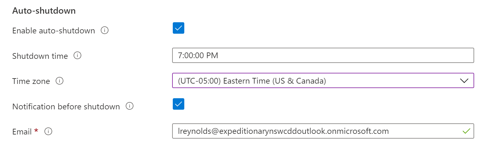
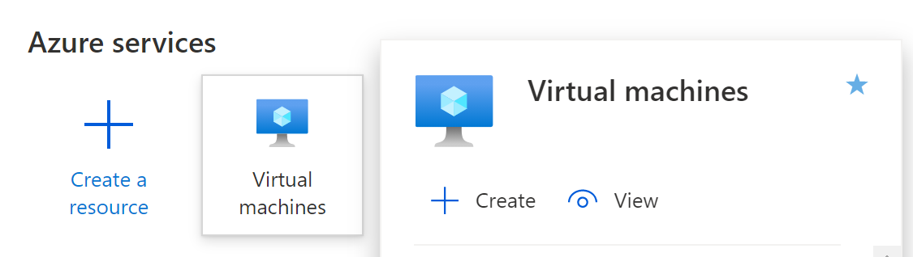
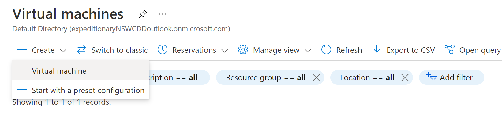
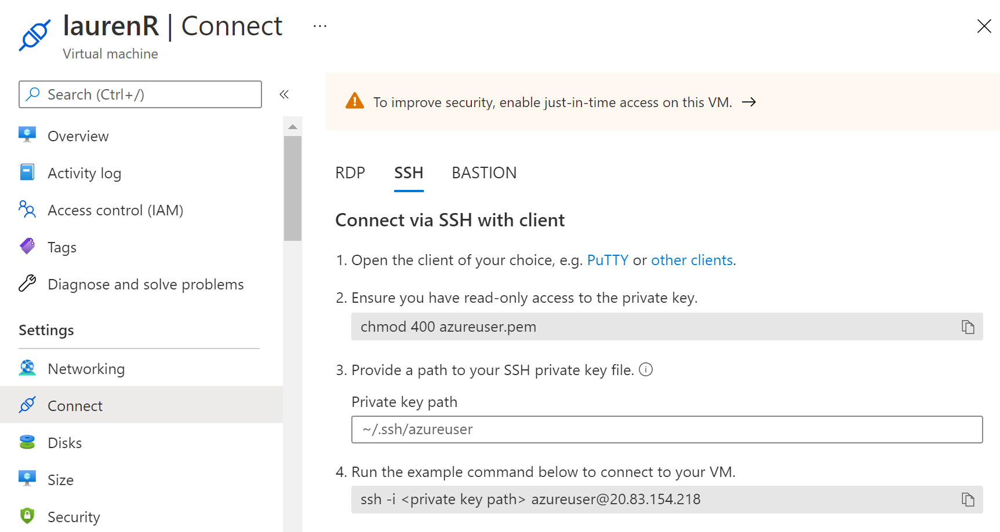
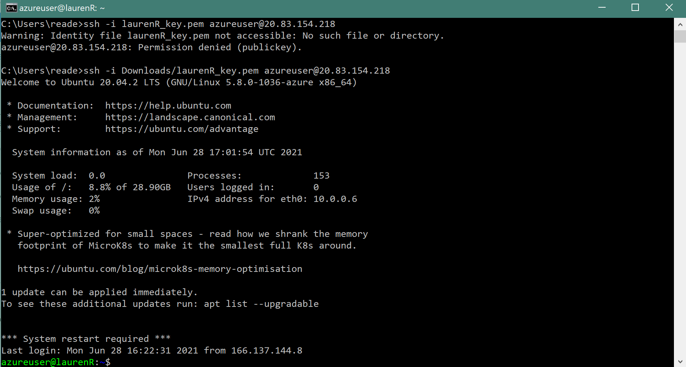
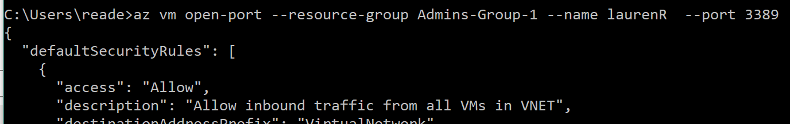
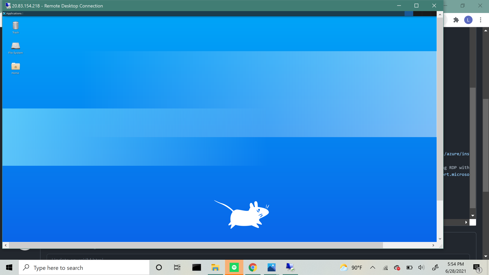

Set time to two hours after when you normally stop working. 
Go to this link: Azure Home. If you are working on NMCI, you may have to open an inPrivate window so that it allows you to chose which account to sign in with.

Log on with your temporary password, then follow prompting to create a new one
On the home page, click on the "Virtual Machines" Icon, then click on the plus button on the left side of the page and select "Create New Machine"
 For much of the VM configuration, the default options are correct. The following settings need to be set correctly:
At the end, enter your email/phone, and click "Create". It may take a couple of minutes for your machine to deploy.
To connect to your virtual machine's user interface, you're going to have to first connect to its command line via SSH, then install a desktop package that will allow you to see the Virtual Machine. After that, you can use RDP and your machine's ip address to open it.
Follow the instructions below using the command line and the key you downloaded while creating your VM.
You should now be connected to the command line interface of your virtual machine, and see something like the image below.
Before installing anything onto your VM, you need to make sure you have Azure CLI installed. Follow the instructions here to install and log on using the command below.
Microsoft has good documentation on installing the desktop here: Using RDP with Linux VM
Remote Desktop Connection should be automatically set up if you have a Windows operating system, but if it isn't it can be configured using these instructions.
Enter the IP address of your VM, log on with the credentials you created, and you should end up with the screen below
After setting up the machine and installing the desktop, only the last step will be necessary to connect to your VM in the future.